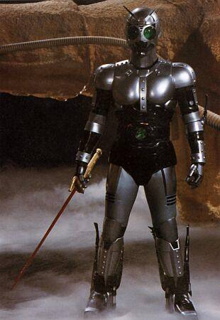
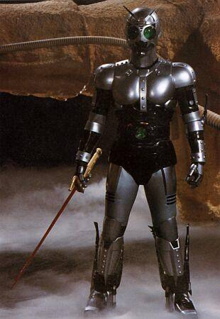
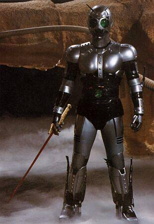

|
Typically, I love TV shows that revolves around love story, anime, and superheroes. My most favorite TV show during my childhood days is Masked Rider Black. The story revolves around the hero of the story, Robert Akizuki (originally called as Tetsuo Kurata in Japan) being the victim of the abduction of an evil organization known as Golgom along with his stepbrother and bestfriend Stephen (Nobuhiko Akizuki). They were the 2 unwilling chosen candidates to be the successor of the present Eon King which will be called as Black Sun and Shadow Moon respectively. Robert had managed to escape with the help of his stepbrother leaving his stepbrother behind who suffered injuries. Since that day on, he renounced his identity as Black Sun and became Masked Rider Black who fights for justice and has a mission of saving his stepbrother from the hands of Golgom. After many battles with the Golgom, he didn't get close enough in rescuing his stepbrother, which gave Stephen the ample time to evolve into a Century King known as Shadow Moon. In the end, the 2 closefriends became rivals for the Golgom throne. Shadow Moon needed to kill Black and acquire his kingstone in order to become the next Eon King. But Masked Rider Black managed to defeat Shadow Moon and defeated single-handedly the forces of Golgom. From the pictures below from left to right are Robert Akizuki (Tetsuo Kurata who became Masked Rider Black which is located on the lower left), Restlie (Stephen's younger sister), Kazumi (Stephen's girlfriend), and Stephen (Nobuhiko Akizuki who became Shadow Moon which is located on the lower right). I also enjoy watching other superheroes like Bioman, Maskman, and Shaider. But I can't really remember their stories maybe because when I'd watched the following series, I was just 6 or 7 years old. |
|
During my high school days, I get to enjoy different animes like Samurai X, Fushigi Yuugi and Ghost Fighter. Although I still enjoy watching Power Rangers during this period. Among the 3 animes, Samurai X is my most favorite because the anime has a very serious theme of a typical ancient Japanese life and swordsmanship. This is also the period where I started to love different Marvel superheroes like Spiderman, Batman, and Iron Man. I always watched "Batman: The Animated Series" and "Batman Beyond" on Studio 23. Little by little, my appetite in watching superheroes turned bitter and I'd started to love MTV. During this time, I was very much influenced by my closest sister Athena to watch MTV. So up to now, I get the habit of watching different MTV Shows. I enjoy watching MTV because it's a form of relaxation for me and my sister. During this college days, I became indulged in many Korean drama series which are shown. First and foremost is the Endless Love series, which deals with different love stories that corresponds to its symbolic season. Among its 3 series, the "Autumn In My Heart" is got to be the most finest series. Because the situation is very complex. The 2 leading characters Johnny and Jenny loved each other since they were young. This love was not a brotherly love, although they considered themselves to be siblings. One day, Johnny left Jenny without saying anything about it to her. As the years passed by, they had a love life of their own: Johnny to Yoomi and Jenny to Andrew. But accidentally they met once again. And this time, their love became much stronger that withstood all the objections of the Yoon family, Yoomi, and Andrew. Not until, Jenny found out that she has leukemia. Johnny had been on her side during the last days of her life. The day after Jenny's funeral, Johnny committed suicide by bumping himself on a huge track. The next installment of the Endless Love series is "Winter Sonata" which is a love story that faces many objections from their respective parents because of their parent's love conflict that occured years ago. This is my least favorite in the series. The latest installment is the "Summer Scent" which is another love story that has a mysterious past. Carlo has a fiancee named Hanna who had died due to a car accident. Her deceased girlfriend's heart had been transplanted to another woman named Abbie, who was suffering in heart ailment. During this time, Abbie had a fiance named George. Few years later, Carlo and Abbie get to know each other in a mountain hiking. They met very often although they didn't want to. Abbie's heartbeat responds fast whenever he is with Carlo, maybe it's because of Hanna's heart. And soon they fell in love with each other despite the fact that Abbie has a fiancee. But later in the series, Hanna's heart started to reject the body of Abbie. And the new heart that was transplanted of her was of manmade. George lied to Carlo that she had died in the operation. So 3 years later in an unexpected scenery, they walked parallel both having their umbrellas. Although they're are many people in that place, Abbie felt that her heart responds the same way as the years before when she is near to Carlo. They get to see each other again after 3 long years. |